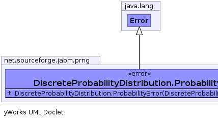
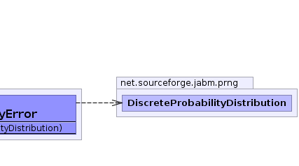

java.lang.Throwable
java.lang.Error
net.sourceforge.jabm.prng.DiscreteProbabilityDistribution.ProbabilityError
java.lang.Throwable
java.lang.Error
net.sourceforge.jabm.prng.DiscreteProbabilityDistribution.ProbabilityError
|
|||||||||
| PREV CLASS NEXT CLASS | FRAMES NO FRAMES | ||||||||
| SUMMARY: NESTED | FIELD | CONSTR | METHOD | DETAIL: FIELD | CONSTR | METHOD | ||||||||
java.lang.Object
public static class DiscreteProbabilityDistribution.ProbabilityError
|  |  |
| Constructor Summary | |
|---|---|
DiscreteProbabilityDistribution.ProbabilityError(DiscreteProbabilityDistribution p)
|
|
| Method Summary |
|---|
| Methods inherited from class java.lang.Throwable |
|---|
fillInStackTrace, getCause, getLocalizedMessage, getMessage, getStackTrace, initCause, printStackTrace, printStackTrace, printStackTrace, setStackTrace, toString |
| Methods inherited from class java.lang.Object |
|---|
clone, equals, finalize, getClass, hashCode, notify, notifyAll, wait, wait, wait |
| Constructor Detail |
|---|
public DiscreteProbabilityDistribution.ProbabilityError(DiscreteProbabilityDistribution p)
|
|||||||||
| PREV CLASS NEXT CLASS | FRAMES NO FRAMES | ||||||||
| SUMMARY: NESTED | FIELD | CONSTR | METHOD | DETAIL: FIELD | CONSTR | METHOD | ||||||||